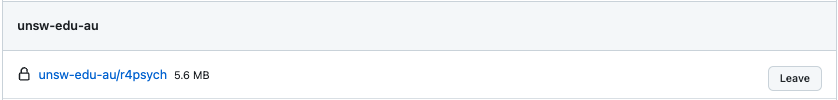
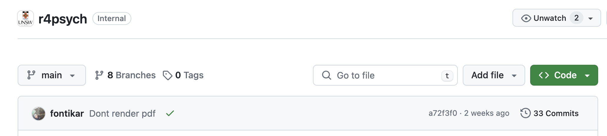
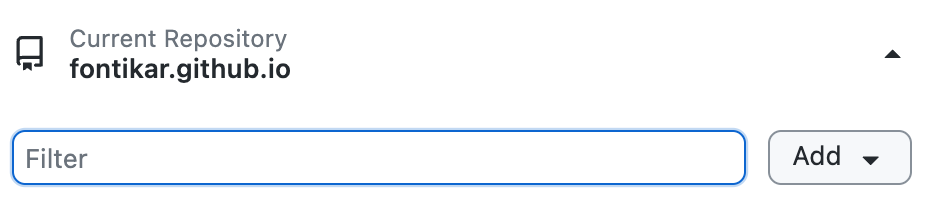
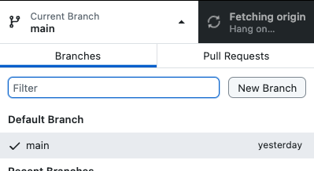
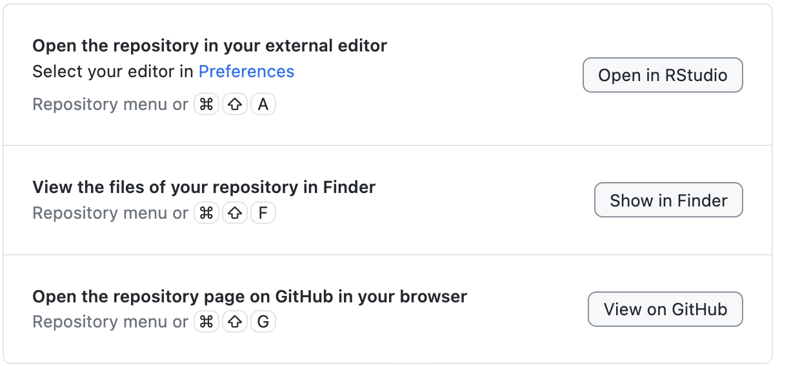
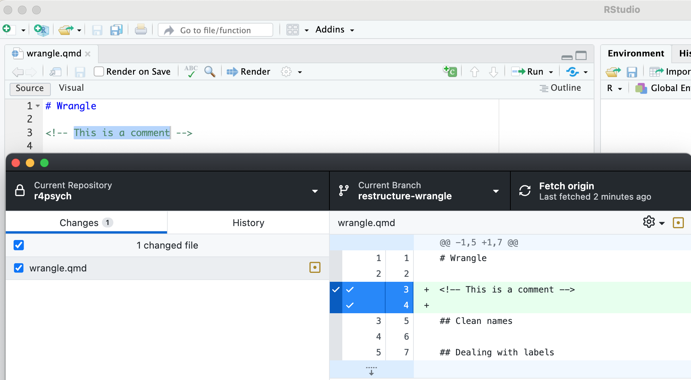
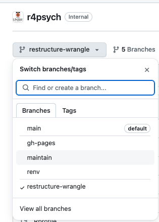
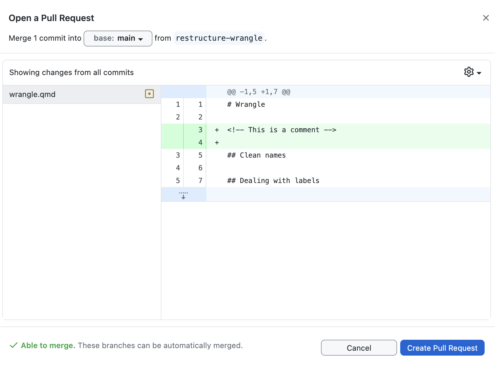
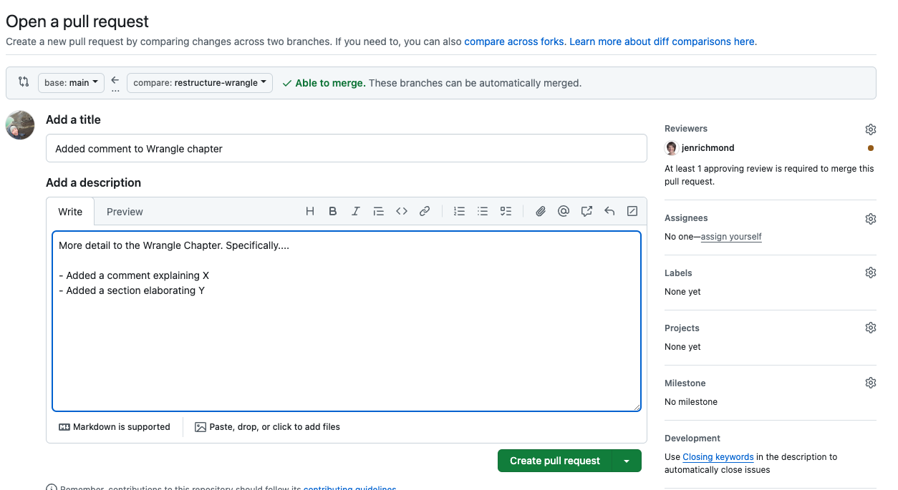

- The library is already synchronized with the lockfile.8 Maintainer’s Guide
8.0.1 Getting access
First, let’s make sure you have collaborator access to the repository.
Head over to your repository settings
If you see unsw-edu-au and the repo name:
unsw-edu-au/r4psychin the list then you have collaborator access to the repository.

If you don’t, let’s go through how you can request an invite to be a collaborator
8.0.1.1 Request access
Create an issue requesting for collaborator access and one of the maintainers with admin rights will send through an invite.
8.0.2 The set up
The set up for maintainer’s is the same for contributors. Check out the following sections to get started:
8.0.3 The Maintainer’s workflow
The maintainer’s workflow goes like this:
You clone the remote repo
You create a new feature branch.
You work on your branch and make your edits, you commit regularly, you push regularly to the remote.
When you are happy with your changes, you will create a pull request for your contribution and one of the other maintainers will review it. Edits may be requested or one of the maintainers will make the changes after having a conversation with you.
Once everything and everyone is happy and dandy with the final changes, your changes will be approved and merged into main. When this happens, your branch is deleted on the remote and you will also delete it locally.
This workflow treats branches as temporary entities and will keeps the remote tidy and streamlined.
Now let’s walk through this workflow step by step.
Note
The next sections assumes you’ve completed the initial set-up of installing git and a git client. We will focus on using Github Desktop, but the main git commands should translate to whichever client you are using.
8.0.4 Clone: Create a local copy of the book
Now that we have all the installation/setup out of the way, we can get started!
Lets get you a local copy of the book onto your computer by “cloning” the repository
Head over to the remote repo for the book:
- Click on the big green button that says Code

Here you will find a drop-down menu showing different methods of cloning the code from the remote repo.
We will stick with the default option of using HTTPS a.k.a. cloning by using the URL of the remote repo.
Click on the copy URL button (The stacked squares icon)
Navigate to Github Desktop and click on the first drop down menu from the left. Here you will find the Add button.

Click on Add and then Clone Repository
Click on the URL option and paste in the URL of this book’s remote repo e.g. https://github.com/unsw-edu-au/r4psych
Under Local Path, you can choose where you want to place this cloned repo. Avoid putting your repos in Cloud services such as Dropbox or Google Drive. These can sometimes interfere with git’s ability to track your changes.
Finally, click Clone and let git do the work! It will copy everything that is in the remote repo and bring it down locally on your computer!
Navigate to the local path where you told git to clone to in Step 7 and check out the directories. You will learn more about these in Book Structure
8.0.5 Branches: Create your own working copy
As maintainers, we will work on branches which are internal copies of the book. This is so we overwrite each other’s work. This approach will also allow us to have a systematic way in introducing new content to the book. Coordinating collaborative changes on the same project is what GitHub does best.
The main branch is currently the most recent approved version of the book - this is displayed at https://unsw-edu-au.github.io/r4psych/
When you clone a repository, the main branch is selected by default.
To create your own branch:
Click on the middle menu that says “Current branch main”
Click on “New Branch”

- Give your branch a name.
Keep it concise and related to the feature you are going to work on e.g restructure-wrangle. Separate words with a hyphen.
At the end of your branch name, put down your initials, that way other maintainers know who is working on which branch. e.g restructure-wrangle-fk
- Click on “Create Branch” and voila! Git will automatically switch from
mainto your branch for you.
At this stage, your branch exists locally on your computer, no where else.
- Next, we will click on “Publish branch”, this will make your branch available on the remote repo so we can formally incorporate its changes to the
mainonce your edits are done. Publishing your branch also allows other maintainer’s see your progress.
8.0.6 Make your changes
Now that you have our own internal copy of the book, you can freely make changes pertaining to the feature you want to work on.
Navigate to the local repo and click on the r4pysch.Rproj file. This will open up the project in RStudio.
You can also use the buttons in Github Desktop to quickly navigate to the project files.

8.0.6.1 Commit: A save point for your work
Now let’s make a change to a chapter.
- As a proof of concept, let’s add a comment in the Wrangle chapter.

- Save this change and have a look at Github Desktop. Notice how git has detected your change? Additions are flagged in green, any deletions are flagged in red. Cool right?!
Now we are going to commit these changes. Think of committing your work as saving your progress in a video. A commit is a safe anchor point to come back to if you need.
By default, git will tick the check box for you. This check box process is technically called “staging”. Its choosing the files you want git to track.
Now include a meaningful, concise message that will be associated with your commit. These are usually summaries that pertains to the changes you’ve made. In this case, “Added comment to Wrangle chapter” will suffice.
Click on the blue button Commit to restructure-wrangle and git will save your changes as a checkpoint.
There is not hard and fast rule with how often you should commit your work. Typically they are bite-sized amounts of work towards the feature you are working on. Thinking about commits as potential check points in time you want to come back to e.g. just after some restructuring/rewording of a big section.
8.0.6.2 Push: Sync your work with remote
Up until this point, all your changes exist locally on your computer. No one else has these changes. Our last step to complete our git/Github workflow is to push our work to the remote repo so other it is available for others to review.
To push your work:
- Click on the blue button that says “Push origin”
This is sync your local changes with those on the remote. Once you’ve done that, you can view your synced changes on the remote repo by selecting your feature branch name under the left dropdown menu

Alternatively, you can click on the third tab menu also labelled as “Push origin” that has an up arrow ⬆️
Continue committing and pushing your work as you make your edits on your feature branch. Its generally good practice to push your work before you step away from working on the book. This is to ensure all your work is synced and shared on the remote.
8.0.7 Pull Request: Submit your feature for review
Once you are happy with your edits on your feature branch and we will prepare a pull request so we can merge them into the main branch.
We will refer to pull requests as PR from now on
Think of a pull request like code peer review. The idea is have another maintainer go over your edits and provide any constructive feedback/edits. This process ensures that the contributions are vetted by the maintainers and merged in to the main branch systematically.
There are two ways to create a pull request:
8.0.7.1 A. Open PR within GitHub Desktop
- After pushing your changes, Github Desktop will automatically prompt you to “Preview Pull Request”. Clicking on this blue button will open a window showing you some key details

At the top, it will tell you what which base branch you are merging into. By default it will be set to
main. In the screenshot above, we can see that we are proposing to mergerestructure-wrangleintobase: mainYou will see a preview of the changes you’ve made to the book. Green are additions, red are deletions.
At the bottom, it will say whether your edits can be easily merged it or whether there are conflicts. We will talk about how to handle conflicts next.
Once you are happy with your preview, click on the blue botton to “Create Pull Request”
- Clicking this button will open a browser to the Github website.
 Here you see the same sort of information from the preview. You are prompted to write a short title and short summary for your PR. These will form the basis of your commit message when it’s approved.
Keep your summary concise, use bullet points or hyperlinks if you find them helpful. You can refer to a Github Issue number using a # suffix. (More of this later).
Request one of the maintainers using the Reviewer dropdown menu to they can review your PR.
Once you are happy, click the green button “Create Pull Request”
8.0.7.2 B: Open PR from Github Website
You can also directly open a PR via the Github website by clicking on the “Pull Request tab”.
Click on the green button labelled “New Pull Request”
Select the branch you want merge into
main. Github will display a preview of your PR here.Click on the green button “Create Pull Request” where you will be taken to the same screen as step 2. from the previous section.
8.0.7.3 If suggestions are requested
You will be prompted via email if there are comments or suggestions made to our PR. The conversations are documented via the PR tab on the Github website. Your feature branch is still active, you can continue making changes and commits to your feature and once they are pushed. They are show up in the PR you have created.
TA-DA!!! 🎉 You’re done!!! That is the entire git/Github workflow. Now leave this with the maintainer you’ve tagged, they may request have some suggestions for you before the official approval but the hardest part is over!
Before you launch into making edits to the book, let’s talk about how R packages are managed for this book. This is important since this is a book about using R and you will most definitely introduce packages in certain chapters. Its also important as the book gains more maintainers working across different computers.
8.0.8 {renv}: Managing R packages
We use renv to manage the R packages that are used by the book across different R versions and operating systems. renv uses a package cache. That means you only ever have to download and install a package once, and for each subsequent install!
Learn more from the renv website
Briefly, renv monitors and installs any R packages that are used in a project. renv records this information so that anyone opening up this book will have access to the same R package versions:
renv stores information in several places:
renv/library/directory
Here you can see R packages for the different versions of R that was used during the creation of this book.
renv.lock
This is a lockfile and contains information about the R packages so that it can be re-installed on a new computer. The great thing about a lockfile is that you can share this which colleagues and they can use renv to reproduce the exact R package environment that was recorded.
.RprofileThis is a project profile and it is run automatically every time you start R.renvuses it to configure your R session to use the project library inrenv/library/.
8.0.8.1 {renv} workflow
We are going to learn some new renv lingo so help us manage our R package environment.
8.0.8.1.1 When you open up the project
Each time you open this book project up run:
This will prompt renv to check and install any R packages that you may not have locally. If you have all the packages installed already, renv will tell you you’re synchronised.
8.0.8.1.2 When you want to add R packages
Over time, our book will need more packages. You can continue to use familiar tools like install.packages(). You can also use renv::install() it’s a little less typing and can install packages from GitHub, Bioconductor, and more, not just CRAN. Ta-da!
The following package(s) will be installed:
- janitor [2.2.0]
These packages will be installed into "~/work/r4psych/r4psych/renv/library/R-4.4/x86_64-pc-linux-gnu".
# Installing packages --------------------------------------------------------
- Installing janitor ... OK [linked from cache]
Successfully installed 1 package in 5.5 milliseconds.After installing the package and checking that your code works, you should call renv::snapshot() to record the latest package versions in your lockfile. You’ll need to commit those changes to git and let your collaborators know that you’ve updated the lockfile and they should call renv::restore() when they’re next working on a project.
Note
This is why its good practice to call renv::restore() each time you open the project 😁